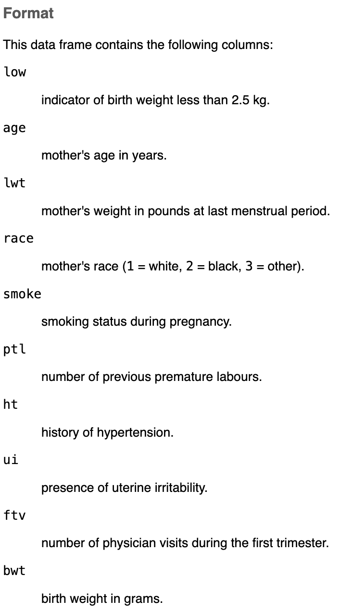
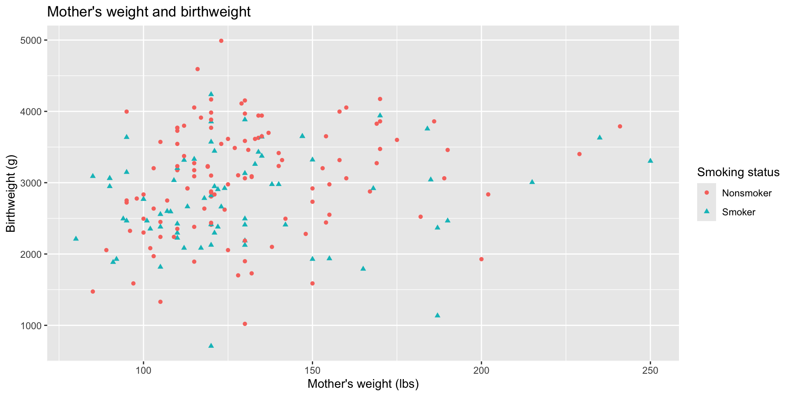
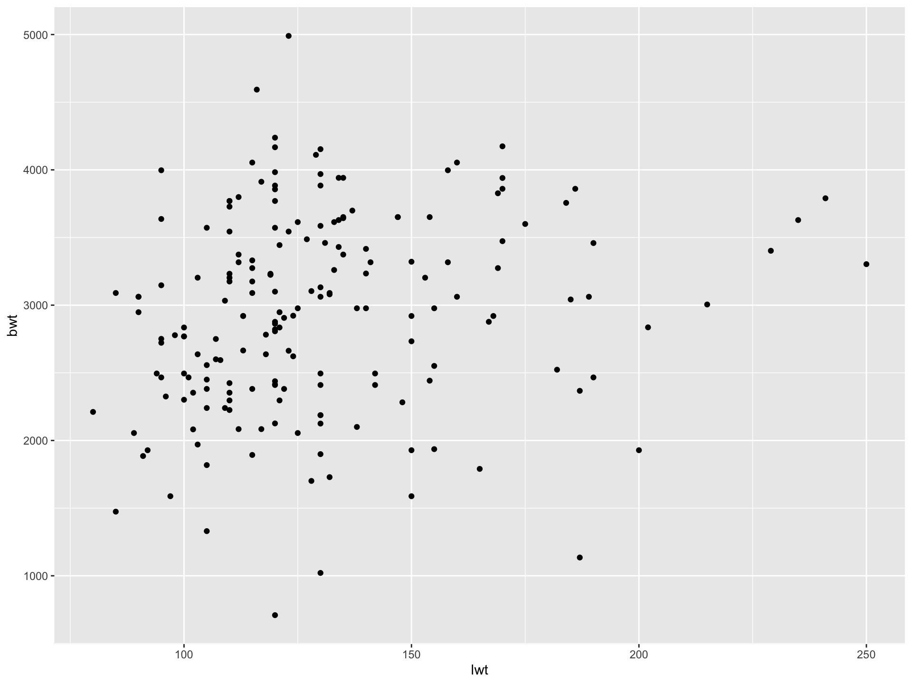
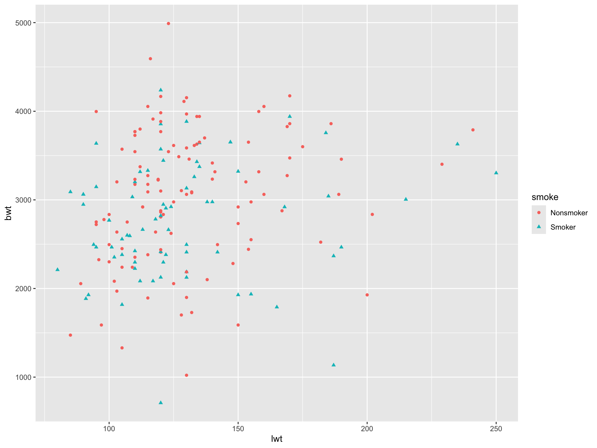
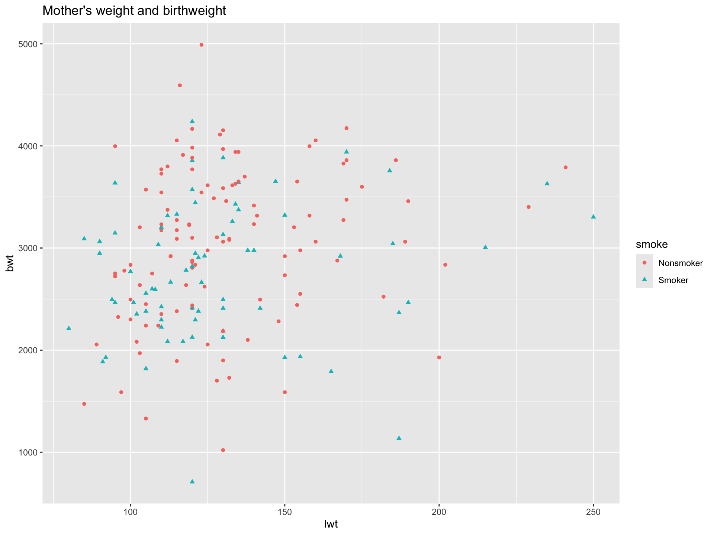
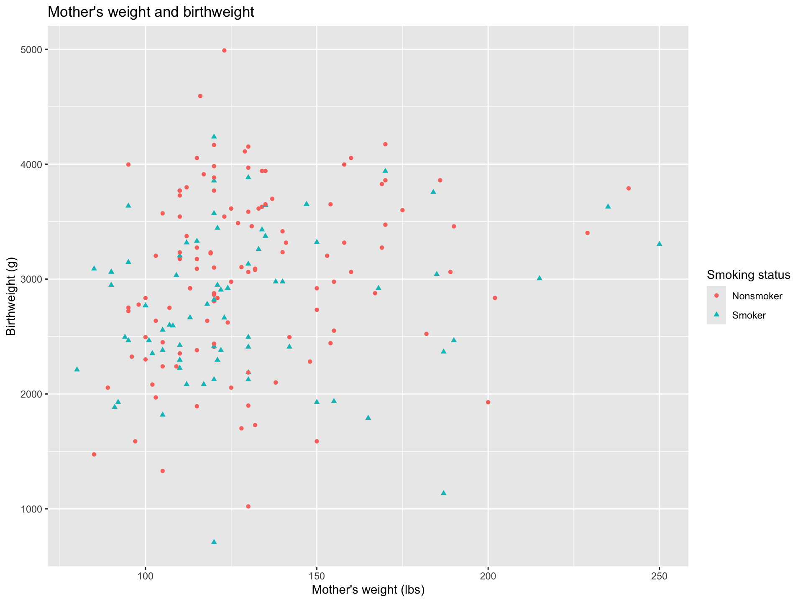
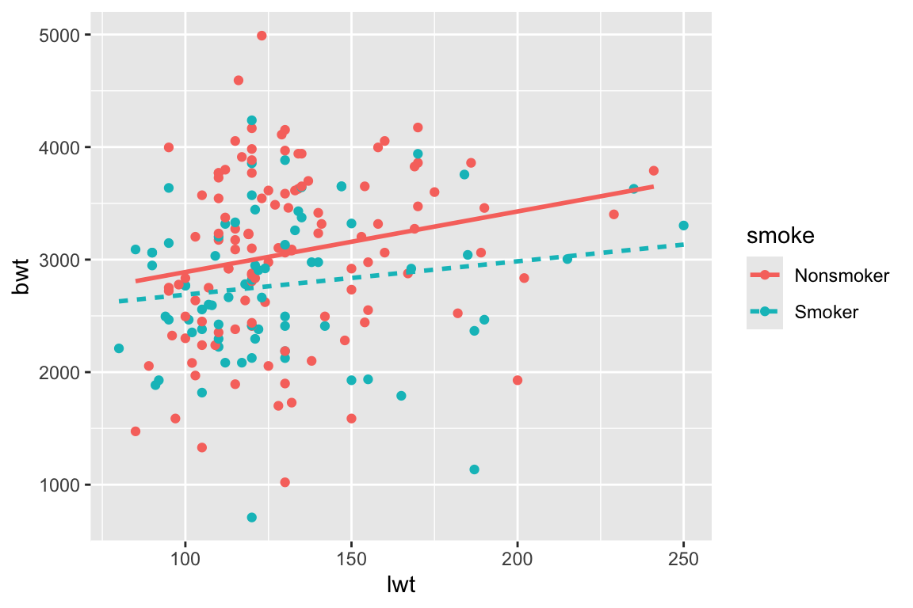

'data.frame': 189 obs. of 10 variables:
$ low : int 0 0 0 0 0 0 0 0 0 0 ...
$ age : int 19 33 20 21 18 21 22 17 29 26 ...
$ lwt : int 182 155 105 108 107 124 118 103 123 113 ...
$ race : int 2 3 1 1 1 3 1 3 1 1 ...
$ smoke: int 0 0 1 1 1 0 0 0 1 1 ...
$ ptl : int 0 0 0 0 0 0 0 0 0 0 ...
$ ht : int 0 0 0 0 0 0 0 0 0 0 ...
$ ui : int 1 0 0 1 1 0 0 0 0 0 ...
$ ftv : int 0 3 1 2 0 0 1 1 1 0 ...
$ bwt : int 2523 2551 2557 2594 2600 2622 2637 2637 2663 2665 ...Module 2: Data visualization I
PUBHLT0411: Statistical Packages for Public Health Data Analysis
Rebecca Deek, PhD
University of Pittsburgh, Biostatistics and Health Data Science
Graphics in R
- Summarizing data, numerically or graphically, is a critical part of data analysis.
- There are three main ways to visualize data in R:
- Base R: Original built-in plotting system.
ggplot2package: Part of the tidyverse.latticepackage.
- We will primarily focus on
ggplot2but start with an introduction to the base plotting functions.
birthwt data
- The data are from the MASS package and were collected at Baystate Medical Center, Springfield, Mass during 1986.

- We may be interested in understanding the distribution of variables (e.g.,
age,bwt) or how to variables are associated with one another (e.g.,lwtandbwt).- Visualization can help with this.
Base R: Scatterplots
- R has plotted numeric
bwton the y-axis and either numericageorlwton the x-axis. - Must use
data$varsyntax, as there is nodataargument.
Base R: Histograms
- Graphical summary of the distribution of a numeric variable.
- Automatically creates the breakpoints (bins) in the histogram using the Sturges formula. Can be altered with
breaks.
Base R: Histograms + density curve
- An estimated density curve can be added to proportion histograms.
Base R: Boxplot
- Graphical summary of the distribution of a numeric variable.
- Provide a measure of central tendency (the median value) and spread (IQR).
Base R: Pairs plots
pairs()helps visualize multiple scatterplots in one multipanel frame.
![A 4x4 scatterplot matrix (pairs plot) comparing four variables: age, lwt (mother's weight), bwt (birthweight), and smoke (smoking status, coded 1–2). Each off-diagonal cell shows a scatterplot between the row and column variables, while the diagonal cells display the variable names. Age and lwt show a loose positive cluster with no strong pattern; bwt versus age and lwt shows scattered points with no clear trend; the smoke variable, being binary, appears as two horizontal or vertical bands of points in its scatterplots with other variables.](module02_visualization-1_files/figure-revealjs/pairs-1.png)
- Mostly helpful for pairs of continuous variables.
Exercise: ggplot
Create a boxplot of birthweight by race. Let the race labels be in string character format. Title the boxplot “Boxplot of birthweight by race” and increase the font size of the x- and y-axis labels.
birthwt$race = (x = birthwt$race, = 1:3,
= c("White", "Black", "Other"))
boxplot(bwt ~ race, data = ,
= "Boxplot of birthweight by race",
ylab = "Birthweight", xlab = "Race",
= 1.5)
Grammar of graphics and ggplot2
ggplot2is an R package for producing statistical, or data, graphics.- Has its own “grammar” based upon the Grammar of Graphics (Wilkinson, 2005).
- Graphs are created by combining independent components.
- Create novel graphics that are tailored to your specific problem.
Goal
- Create the following plot using
ggplot2grammar.

First: Creating factors
Text <–> Plot
Start with the
birthwtdata frame
- All plots start with
ggplot(). Defining a plot object that we will add layers to. - Looks empty but is primed to plot
birthwtdata.
Text <–> Plot
Start with the
birthwtdata frame. Map mother’s weight to the x-axis and birthweight to the y-axis.
- Mappings are always defined in
aes()[aesthetics] and define the visual properties of the plot.
Text <–> Plot
Start with the
birthwtdata frame. Map mother’s weight to the x-axis and birthweight to the y-axis. Represent each observation with a point

geom_*()plots the geometrical object that a represent data. Here we use points for a scatterplot.
Text <–> Plot
Start with the
birthwtdata frame. Map mother’s weight to the x-axis and birthweight to the y-axis. Represent each observation with a point. Map smoking status to the color and shape of each point.

- We are changing the aesthetics of the
geom_*\(\rightarrow\) useaes().
Text <–> Plot
Start with the
birthwtdata frame. Map mother’s weight to the x-axis and birthweight to the y-axis. Represent each observation with a point. Map smoking status to the color and shape of each point. Title the plot.

labs()updates the labels of our plot.
Text <–> Plot
Start with the
birthwtdata frame. Map mother’s weight to the x-axis and birthweight to the y-axis. Represent each observation with a point. Map smoking status to the color and shape of each point. Title the plot. Relabel the x- and y-axes.
Text <–> Plot
Start with the
birthwtdata frame. Map mother’s weight to the x-axis and birthweight to the y-axis. Represent each observation with a point. Map smoking status to the color and shape of each point. Title the plot. Relabel the x- and y-axes. Relabel the legend title.
ggplot2::ggplot(data = birthwt,
mapping = aes(
x = lwt,
y = bwt)
) +
ggplot2::geom_point(
mapping = aes(color = smoke,
shape = smoke)
) +
ggplot2::labs(
title = "Mother's weight and birthweight",
x = "Mother's weight (lbs)",
y = "Birthweight (g)",
color = "Smoking status",
shape = "Smoking status"
)
ggplot2 calls
ggplot2()has two main arguments:dataandmapping.- These names can be omitted and R will infer their assignments.
- Helps to keep code concise and readable.
- We will learn about the pipe functions
%>%and|>to streamline code.


Aesthetic options
Visual characteristics of the plotting geoms that can be mapped to a specific variable in the data.
Commonly used arguments are:
x,y(position)group(group structure)colorfill
shapesizealpha(transparency)linetypelinewidth
Aesthetics given in ggplot() apply to all geometries and override geom_*() specifications.
Color and shape
Size
- Mapped to a variable \(\rightarrow\) inside
aes().
Size
- Mapped to a constant \(\rightarrow\) outside
aes().
Alpha
- Mapped to a variable \(\rightarrow\) inside
aes().
Alpha
- Mapped to a constant (between 0 and 1) \(\rightarrow\) outside
aes().
Linetype
- Mapped to a variable \(\rightarrow\) inside
aes().

Note: We have three mappings!
Linetype
- Mapped to a discrete constant or string \(\rightarrow\) outside
aes().
Note: Mappings were condensed.
Linewidth
Note on aesthetic options
Available aesthetics depend on the geom used. See help files.
- E.g.,
linewidthorlinetypewould work for geoms with lines (e.g.,geom_bar,geom_histogram,geom_boxplot) but not for geoms with points (e.g.,geom_scatter).
- Supplying a discrete variable for
alphaorsizedoesn’t make sense. Likewise for a continuous variable andshape.
Mapping versus settings
- Mapping: determines visual properties (aesthetics) based on the values of a variable in the data.
- Must be wrapped in
aes()and passed into themappingargument ofggplot2()orgeom_*().
- Must be wrapped in
- Setting: applies a fixed, constant value, not directly from the data, to visual properties of the plot.
- Must be passed directly into
geom_*()as an argument. - E.g.,
size = 3,alpha = 0.8, orlinetype = "dotted".
- Must be passed directly into
- Showed mappings and settings for
size,alpha, andlinetype.- Can also be done for
color,shape, etc.
- Can also be done for
Default aesthetics
Once you map an aesthetic, ggplot2 takes care of the rest. It:
- Selects a reasonable scale to use with the aesthetic.
- Constructs a legend that explains the mapping between levels and values.
- For
xandyaesthetics, no legend is created. Instead an axis line with tick marks and a label is made.
These are the default options provided by ggplot2, there are functions and arguments to override them.
- Our main example showed how
labs()over rides axis and legend labels. We will go over other ways to make changes to axes, labels, and legends.
Exercise
Create a scatterplot of bwt by age. Color the points by presence of uterine irritability (ui). Is this plot how you expected?
ggplot2::ggplot(birthwt, aes(x = , y = ) ) +
ggplot2::geom_point(( = ui))
Change the value of the shape argument and see how the plot changes. Try both numbers and strings (of common shapes). Why do all points change shape?
ggplot2::ggplot(birthwt, aes(x = age, y = bwt) ) +
ggplot2::geom_point(shape = )
Visualizing data and distributions
- How you visualize data depends on multiple considerations.
- Is the data categorical (characters or factors) or numerical (double or integer)?
- Do you want to visualize one variable or the relationship between two or more variables?
- The answer to these questions will determine:
- Which
geom_*()to use. - The inputs into the aesthetic mappings
aes().
- Which
geom_bar(): One variable
- Single categorical variable.
- The height of the bars displays how many observations occurred for each
xvalue.
geom_bar(): Two variables
- Two categorical variables.
- Can create either frequency or relative frequency plots.
geom_histogram(): One variable
- Single continuous variable.
- Divides the x-axis into equally spaced bins. The height of a bar displays the number of observations that fall in each bin.
geom_histogram(): Two variables
- Continuous-categorical pair.
- Continuous variable is always plotted on the x-axis.
geom_density(): One variable
- One continuous variable.
- Smoothed version of a histogram.
geom_density(): Two variables
- Continuous-categorical pair.
- Continuous variable is always plotted on the x-axis.
geom_boxplot(): One variable
- One continuous variable.
- Provides visualization, as well as measure of central tendency and spread.
geom_boxplot(): Two variables
- Continuous-categorical pair.
- Can compare this to our base R plot.
ggplotis easier to customize.
geom_scatter()
- Two continuous variables (x- and y-axis), continuous or categorical variables for aesthetics.
- Can plot categorical variables on axes but not as informative.
Geoms
ggplot2provides more than 40 geoms.- We will cover a few more but not all possible plots one could make.
- Look into extension packages to see what others have created.
- And maybe for your final project!
Exercise: Base R plots
Determine why the code doesn’t produce a plot as expected (or at all).
Error in `geom_point()`:
! Problem while computing aesthetics.
ℹ Error occurred in the 1st layer.
Caused by error in `scale_f()`:
! A continuous variable cannot be mapped to the shape aesthetic.
ℹ Choose a different aesthetic or use `scale_shape_binned()`.